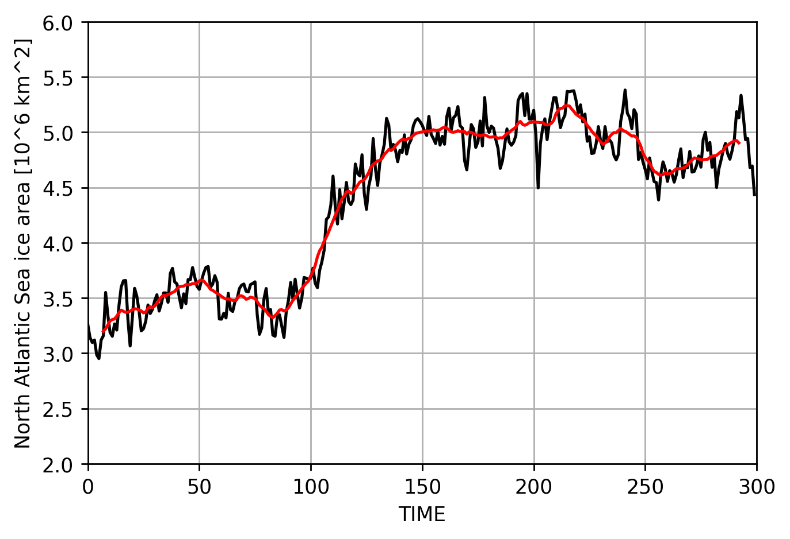
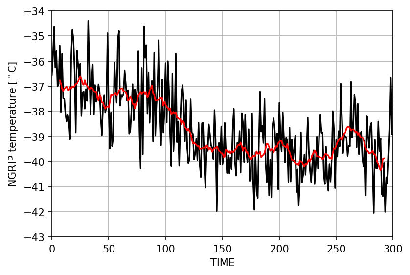
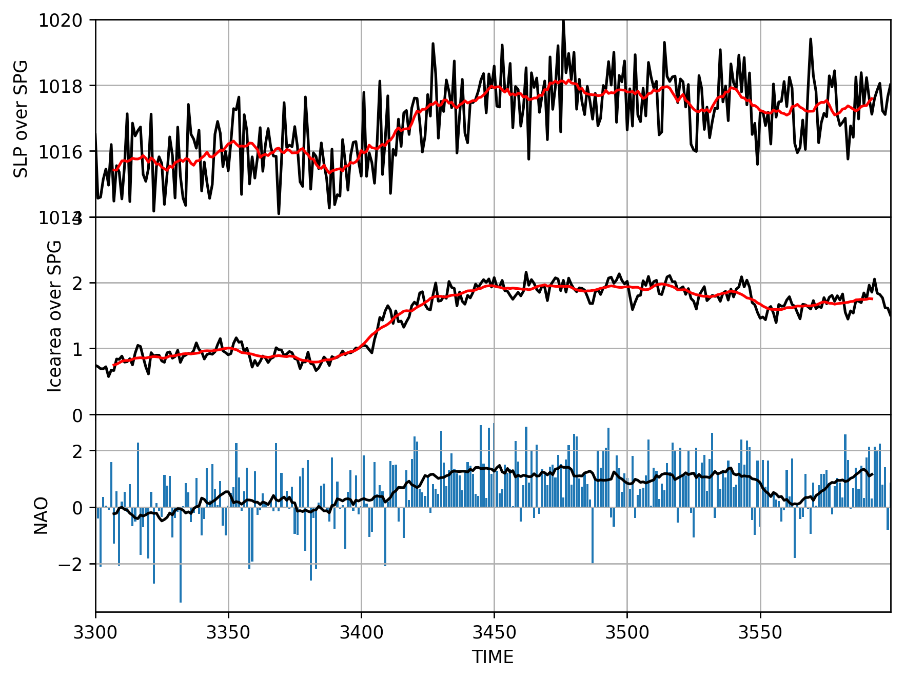
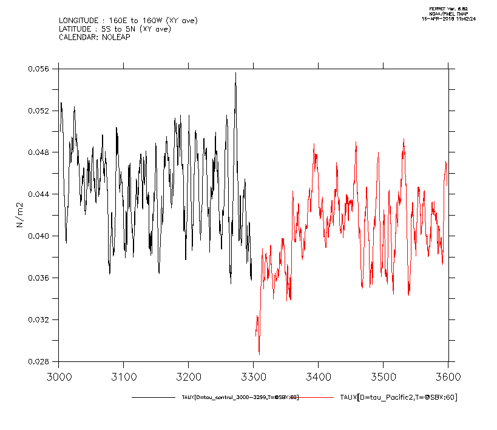
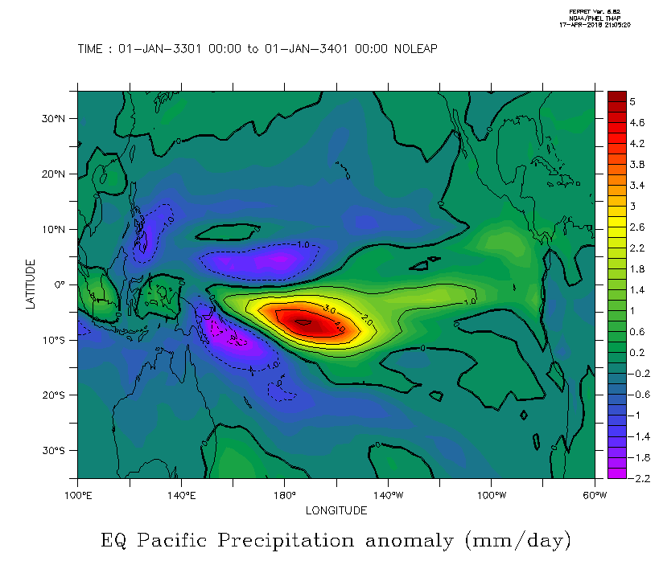
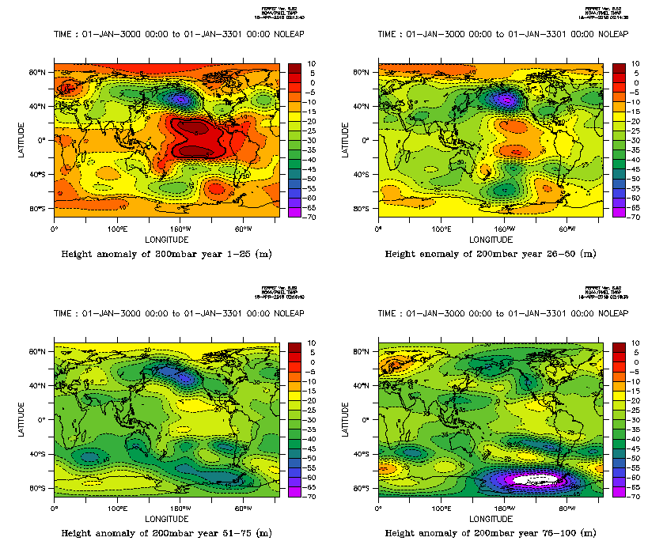
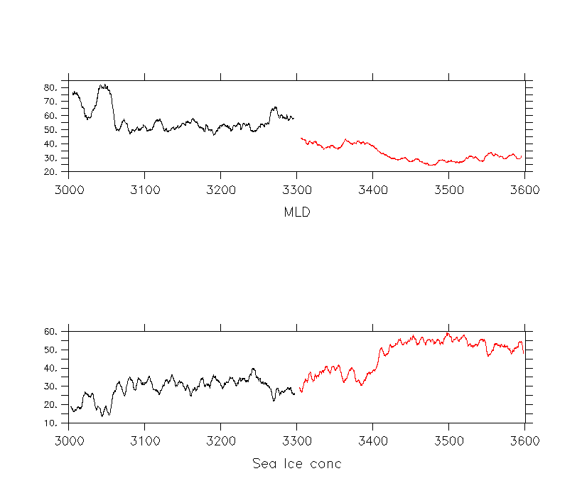

Pacific2:
First, here's the NA sea ice cover in the Pacific2 case:  A large sea ice increase between year ~100 and 150, where sea ice area is increased by almost 50%.At the same time, NGRIP temperature drops by 4 degrees:  The sea ice anomaly occurs in the Labrador Sea:
 All these things look very similar to Hannah's results, where Pacific precip anomalies occured prior to SLP changes in the SPG.
All these things look very similar to Hannah's results, where Pacific precip anomalies occured prior to SLP changes in the SPG.I first looked at the North Atlantic to see if anything leads/lags, but SLP, sea ice and NAO all occur simulataneously:  So it appears the sea ice increase is a result of something else. I looked at the actual changes in the Pacific. The following figure shows the zonal wind stress over the tropical Pacific prior to perturbation (black) and after perturbation (red). As can be seen, wind stress drops, but recovers so that after a century the difference is only 10%.  However, this change is enough to create a significant ENSO like precip anomaly:  This precip anomaly creates a change in the height of the 200mbar surface as well as SLP. In particular, the North Pacific has a SLP depression, and the anomaly extends to the North America and North Atlantic.  How this change in atmospheric circulation changes the the North Atlantic is next sted to investigate, but it is evident that a fast atmospheric response influences the circulation. This is seen as the MLD in the SPG changes almost instantly following the perturbation: 